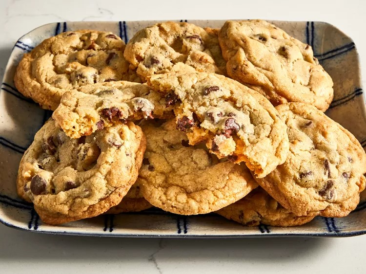

Are you craving a gooey and delicious chocolate chip cookie? This is the right recipe for you. My recipe will make 4 dozen cookies and will only take 30 minutes to make. This recipe makes the perfect afternoon snack and in my opinion, they'll taste even better when dipped in milk. Anyone can make this recipe as it takes little to no skill, so if you have 30 minutes to spare in your day, give this recipe a try!

Mix the softened butter, white+brown sugar, eggs and vanilla together in a large bowl.
:max_bytes(150000):strip_icc():format(webp)/10813-best-chocolate-chip-cookies-mfs-step-2-1191-1b57f642a52849ce84a25c48363c4013.jpg)
Dissolve the baking soda in the hot water and add to the mixture.
:max_bytes(150000):strip_icc():format(webp)/10813-best-chocolate-chip-cookies-mfs-step-4-123-abd5290df87f47668cbc8eef6587c292.jpg)
Add flour and chocolate chips then mix.
:max_bytes(150000):strip_icc():format(webp)/10813-best-chocolate-chip-cookies-mfs-step-5-125-b755dee648e949129ad022d8b019b405.jpg)
Roll the dough into small balls and put them on a prepared baking sheet.
:max_bytes(150000):strip_icc():format(webp)/10813-best-chocolate-chip-cookies-mfs-step-6-128-44e1d4355a6a4441a3ba993e2a2b74fa.jpg)
Preheat your oven to 350°F or 175°C.

Once preheated, bake for 10 minutes or until the edges are golden brown.
:max_bytes(150000):strip_icc():format(webp)/10813-best-chocolate-chip-cookies-mfs-step-7-134-e0952f5171a2434dbb2b3bb53b18648a.jpg)
Let the cookies cool on a wire rack for about 5-10 minutes.